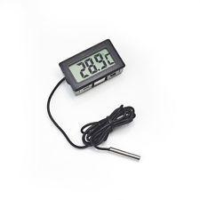
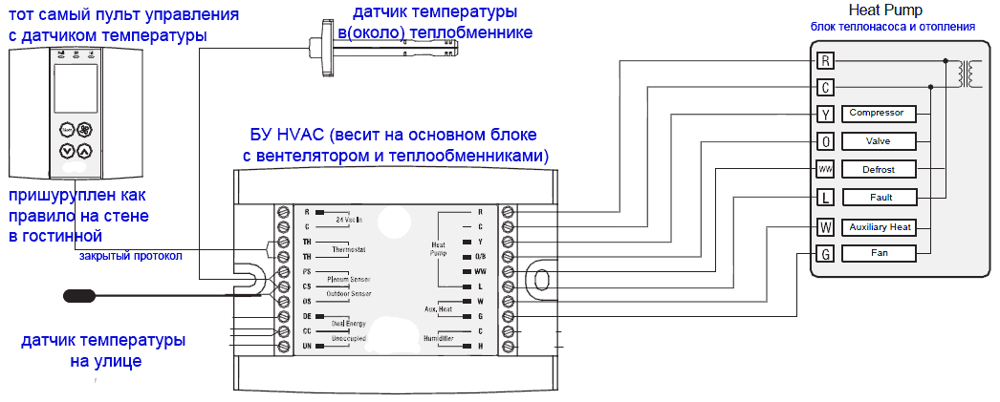

Хотел бы поделиться проектом по домашней автоматизации, который я наконец доделал. Эта статься будет полезна тем кто хотел бы управлять(или просто контролировать) с любого мобильного устройства с браузером из любой точки мира централизованным или не очеень отоплением частного дома с системой Термо Помпы (Heat Pump в северной америке), просто кондиционером или квартиры по средствам прямого подключенмя к имеющемуся БУ (термостату) и дополнительно устройствами протокола Х10. Всё началось с того что мой приятель вместе с соседом ненавязчево капали мне на голову про огромную роль чуда чудного - Arduino в современном обществе и что я как человек умеющий и любящий держаь паяльник просто обязан заразиться этой Ардуино манией как можно скорее. Я всячески отмахивался и говорил что область практического (не робото-игрушки) применеия её дома очень сомнительна и делать на основе мошьно микроконтролеера последовательно загорающиеся светодиолные линейки для подсветки ступенек лесницы (вместо одгого сдвигвого регистра и генератора) это просто из пушки по воробьям а остальное всё баловство. Но всётаки зерно Arduino им удалось заложить в мою голову и как все зёрна с приходом весны и на подступах лета росток начал пробиваться. Я нелюблю хобби проекты ради самих проектов. Какаято практическая сторона должна присутствовать а тем более что ресурсо ($ и время) ёмкие проекты для семейного человека должны ещё иметь высокий WAF (Wife acceptance factor) или как говорит мой Папа его легко легализовать. И как всегда лень явилась двигателем прогресса. Сидели мы чуть позже полудня на веранде, солнце приятно припекало а в тоже время в спалье на верхнем этаже спал сынишка и судя по китайскому термометру за 2 доллара (до которого надо было ещё дойти и посмотреть не разбудив сына)  температура была за 26. Значит надо теперь идти в гостинную и включать центральный кондиционерб а потом надо его ещё и выключать чтобы он не включался каждый раз когда температура немного подымится. Особенно это неприятно делать летом ночью, замёрзнув под лёгким одеялом надо вскакивать и опятьже не перебудив всех домочадцев бежать в гостинную к пульту и вырубать это достижение прошлого века. Тут то я и смекнул что пора прекратить такое безобразие и озвонить други и сказать "Где там твоя хвалёная Ардунья, Ддавай её сюда щас мы посмотрим на что она способна?". Сразу скажу что совсем не выберал именно её и не думал что она акажется такая некчёмная и даже от злости и безсилия бороться с ней дальше чуть не переехал посреди проекта на STM32. В конечном итоге всётаки остался с ней, но обовсём попорядку. Чтобы проще было понять почему всё сделано так и как Вам намазать на хлеб мой опыт и наработки, начнём с описания того что есть/было у меня под рукой:
1) Частный дом в Канаде (хотелось бы сказать что он мой, но конечно же он пренадлежит банку и как бы это абсурдно не звучало но иметь его полностью выплаченным при текущих ставках даже не выгодно) 1959 года постройки как тут их называют Split Level те дом дыух этажный но половина его сдвинута вертикально относительно другой половины на пол этажа.
2) Arduino Uno (в последствии изза малого числа Вх/Вых для X10 потребовалась Mega)
3) дорогой и родной Ethernet Shild. Что-то запустить и найти адекватную библиотеку для ENC28J60 мне не удалось
4) Желание, время и немного денег.
Как здесь принято, спальни нахотятся на верхнем этаже и для меня получается что на пол этажа выше гостинной где и находится прикрученный к стене зловещий пульт управления системой отопления охлаждения. Тут такие систем называются HVAC (heating, ventilation, and air conditioning)на самом же беле это обычный огромный (десятки тысяч BTU или они их тут в тоннах чегото(не веса!) меряют) сплит кондиционер внешний теплообменник и копмрессор которого находятся на улице а врутри теплообменниу встроен в систему центрального вентелирования. которая полтора киловатным вентилятором забирает воздух с уровня пола гостинной прогоняет чераз два теплообменника (один до кондиционера другой от мазутной или газовой горелки) и по системе коробов гонит в каждую комнату. Удобство и собственно само название тепловой насос вызвано тем что этот аппарат может гонять фрион в обе строны и соответственно не только охлаждать но и нагревать воздух в доме. Надо заметить что вагревать он его может более менее эфективно только если на улице достаточно тепло больше 0 иои -5 (зависит от модели и конструкции)ю Если же холодно то тепловой насос работать не будет и для этого какраз то и нужен бак с мазутом или газ. Я начал свой проект и амбиции с малого, так и давайте мы разберём как же сделан этот HVAC и как им управлять. На повернку оказывается не так страшен чёрт. Обним из удобств является жудкая стандартизация всего домашнего и не очень в америке это то что можно скрещать ежей с ужами по открытому, простому (иногда слишком) и общеизвестному (как правило древнему, кондовому) протоколу/стандарту. В нашем случае саму систему(вентилятор горелки теплообменники можно купить одного производителя кондиционер второго(влажностью у тертьего) а Блок Управления всем этим у четвёртого. Честно говоря не знаю также ли называются/управляются подобные устройства в Европе, но думаю что всё либо слизато либо очень похоже. Насколько я понял такие системы уже есть в России и возят их откуда попало/дешевле, так что у вас есть большие шансы столкныться именно с такой системой. Давайте посмотрим на схему типичного подключения системы до того как мы начнём врезаться в систему.
Как мы видим почти всё понятно с первого взгляда. fД
(110В в розетках => безумные амперы),